UDN
Search public documentation:
SpeedTreeJP
English Translation
中国翻译
한국어
Interested in the Unreal Engine?
Visit the Unreal Technology site.
Looking for jobs and company info?
Check out the Epic games site.
Questions about support via UDN?
Contact the UDN Staff
中国翻译
한국어
Interested in the Unreal Engine?
Visit the Unreal Technology site.
Looking for jobs and company info?
Check out the Epic games site.
Questions about support via UDN?
Contact the UDN Staff
Speed Tree
ドキュメント概要： エディタ内での SpeedTreeアクタの使用法。 ドキュメントの変更ログ： Ryan Brucks により作成。概観
このドキュメントは SpeedTreeCAD ツールから SpeedTree コンテンツを Unreal Engine 3 に取り込む方法を説明したガイドです。ここではUE3 内での SpeedTreeアクタの特殊な機能を説明していきます。樹木のインポート方法、ワールドへの追加方法、マテリアルの作成や割り当て方法、どのプロパティを変更できるかなどの情報が含まれています。 また、このドキュメントにはカスタム リーフ メッシュを 3DS Max から SpeedTreeCAD にエクスポートするために必要な説明やスクリプトも含まれています。Speed Trees のインポート
SpeedTrees を UnrealEd にインポートする方法は、他のファイル タイプをインポートするのと同様で非常に簡単です。メニュー オプション File ->Import を選択し、ファイル タイプを "SpeedTree(*.spt)" に変更し、インポートしたい spt ファイルをブラウズします。リアルタイム使用のために、この spt ファイルが SpeedTreeCAD からエクスポート済みであることを確認してください。これを行うことにより、複合マップを作成し、ビルボードを生成し、新しい複合マップで使用するためのテクスチャ座標を spt ファイルに設定します。SpeedTreeCAD からエクスポートされていない 樹木をインポートしてもクラッシュはしませんが、テクスチャの問題が発生し、ビルボードが得られません。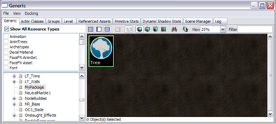
ブラウザ内の SpeedTreeのアイコンをダブルクリックして、そのSpeedTreeのエディタを起動します 樹木の広範囲にわたるエディットは SpeedTreeCAD 内で行われるべきですが、UnrealEd 内では 樹木用のランダム シードを変更したり、樹木を地面に埋めてLeafStaticShadowOpacity を変更したりできます。 LeafStaticShadowOpacity で所定の leaf がライティング トレース(照明)をブロックする率を調節できます。1 (初期設定) の状態で、すべてのトレースは leaf に当たり、影は leaf の形状通りになります。0.5 に設定すると、ライティング トレースが leaf に当たりにくくなります。そのため多少のライトが通り抜け、leaf がたくさん重なり合っている 樹木の中心部分は影が一番暗くなるため、この部分ではライティング トレースが leaf に当たりやすくなります。0 に設定すると、leaf は投影しません。樹木によって最適な値が異なってくるので、いくつか設定を試してみるのもよい方法です。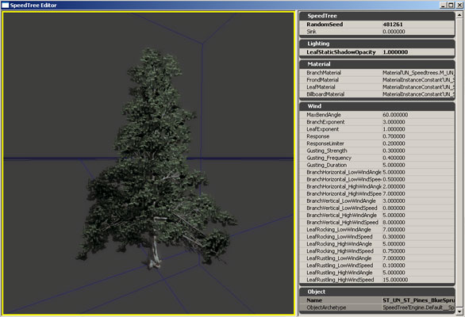
SpeedTreeにマテリアルが適用されたエディタウィンドウは、マテリアルが静的メッシュに適用された方法とよく似ています。 樹木用のテクスチャのインポートとマテリアル作成は 『マテリアルのセットアップ』セクションの中で説明されています。マテリアルを一度作成すると、樹木のマテリアル スロット に割り当てることにより 樹木に適用することができます。マテリアルの割り当ては、配置された SpeedTreeインスタンスごとにオーバーライドすることも可能です。また Branch、Frond、Leaf、billboard 用のスロットもあり、同じマテリアルが Leaf、Frond、Billboard に使用されることもあります。法線マップ、セルフシャドウイングなど 4 つの個別のスロットがあり、樹木の部分のみに使用されます。またSpeedWind パラメータも公開されています。Wind のエフェクトに関するこれらのパラメータにつきましては SpeedWind の SpeedTreeCAD ユーザー 参照 セクションにて紹介されています。マテリアルのセットアップ
Unreal Engine 3 内の SpeedTrees は UnrealEd にビルドされているマテリアル エディタを活用し、他のサーフェス上のありうるすべてのマテリアル エフェクトを 樹木に反映させます。樹木の様々な部分にあるマテリアルはシンプルにも複雑にも自由に変えられます。 基本的に SpeedTrees のマテリアルはその他のマテリアルと同じように作成されます。テクスチャをインポートし、新しいマテリアルを作成し、対応したテクスチャ出力をマテリアルにフックします。複合マップとビルボード
複合テクスチャのインポート
SpeedTrees は Diffuse テクスチャの アルファチャンネルに保存されたノイズを使用し異なる 樹木LOD を移行します。自動ミップマッピングによるアルファ ミップマップのブラー (移行の阻止の原因となる) を避けるには、Diffuse テクスチャのインポートの際に "Dither Mip-maps alpha?" を選択します。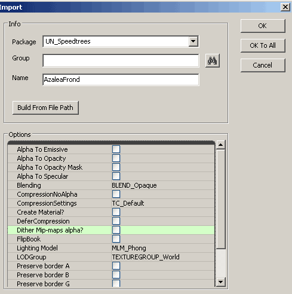
当然のごとく、複合マップ用の法線マップは TC_NormalMap としてインポートされます。 注意： SpeedTreeCAD から複合マップをエクスポートする際は、 オプション "Include Mipmaps" が選択されていないことを確認してください。複合マテリアルの作成
Frond、Leaf、Billboard すべてに同じマテリアルが使用できるようになるので、樹木には複合マップを使用することを推奨しています。複合マップを使用しなくても、マテリアル設定は上記の 3 つすべて同じものとなります。 現時点では、SpeedTreeの 樹木の Trunk /Branch 上のUV マップ座標の作成に対する制限のため、Branch には常に別のマテリアルを使用しなければいけなりません。 複合およびビルボード マテリアルについては、テクスチャ アルファを OpacityMask にフックし、ブレンド モードを BLEND_Masked に設定し、さらに OpacityMaskClipValue を 0.33333 に設定します。この数字は (255 の中の) 84というピクセル値に対応し、SpeedTreeCAD によって作成されるテクスチャの中のアルファチャンネルにとって最も低いカットオフとなります。 スムーズな level of detail (LOD) 移行を行うには、VertexColor からのアルファ値をマテリアルのアルファ値に追加しなければなりません。LOD の切り替えはアルファ値減少のプロセスを通して起こります。これはテクスチャのアルファ チャンネル内の一定のノイズがLOD が増加時に別の LOD の減少を可能にします。OpacityMask がテクスチャ内にあるホールを取り除くようにするには、VertexColor アルファ値をアルファ チャンネルに追加してください。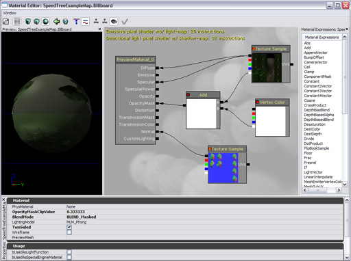
Branch
Branch のテクスチャのインポート
Branch のテクスチャは通常初期設定でインポートされます。Billboard が表示される前に、Branch や Trunk を減少させたい場合は、Branch diffuse テクスチャのうちの 1 つのアルファ チャネルに手動でノイズを追加し、テクスチャをインポートする際に "Dither Mip-maps alpha?" を選択します。 当然のごとく、Branch マテリアルの法線マップは TC_NormalMap としてインポートされます。Branch マテリアルの作成
Branch マテリアルは SpeedTreeの Trunk や Branch に使用されます。標準の設定は下記の写真をご参照ください。Billboard が表示される前に、Branch や Trunk を減少させたい場合は、Vertex Color アルファを Diffuse アルファに追加し Branch マテリアルのOpacityMask 入力に接続します。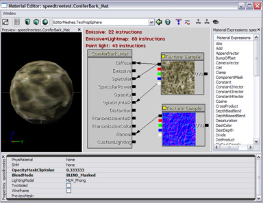
インスタンス化
樹木をテクスチャする際にマテリアル インスタンス化を使用すると、新しいマテリアルの作成する時間を大幅に削減することができます。これによりマスターマテリアルを持つことがほとんどなく、新しいインスタンスはテクスチャ パラメータを変更するだけで作成することができます。すべてのテクスチャサンプルは TextureSampleParameter2Ds と名づけてください。また、カラー コントロールを取り入れることで、Speed Tree Actors 上のマテリアル割り当てをオーバーライドすることにより、異なる樹木のアクタに微妙なカラー バリエーションを与えることができます。これを行うのに一番簡単は方法は、VectorParameter で Diffuse 値を掛け合わせることです。アルファ出力により VectorParameter の RGB 値を掛け合わすことで輝度コントロールを調節できます。VectorParameter の初期設定値がすべて 1 になっていることを確認してください。 この方法を使用時には、少なくとも 2 つのマスター マテリアルが必要となります。1 つは複合マップ用、もう 1 つは Branch 用です。 複合マップがすべて (Leaf、Frond、Billboard) を含むために使用される場合、すべてを一致させるために Leaf とBillboard を別々に調整するのではなく、1 つのインスタンスのプロパティを変更して樹木の色を調整することができます。。 MaterialInstance 作成に関する詳細な情報は マテリアルのインスタンス設定 ガイドを参照してください。SpeedTreeアクタの使用
SpeedTrees は SpeedTreeActors を使用することによりシーン内に配置することができます。これによりアクタはあらかじめブラウザにインポートした SpeedTreeを参照します。これを実行する一番簡単な方法は、ブラウザ内で 「SpeedTree」を選択し、レベルのどこかを右クリックし、「AddActor」->「Add SpeedTree: *」を選択します。「*」はブラウザ内の SpeedTreeの名前です。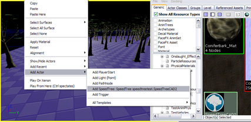
SpeedTreeActor プロパティ
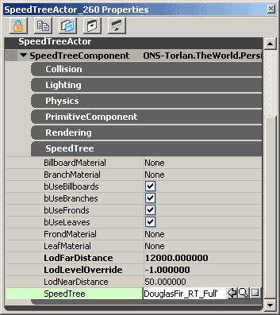
配置された SpeedTreeActor をダブル クリックすると、アクタ プロパティ ウィンドウが開きます。SpeedTreeComponent セクションを拡張すると、このアクタに特有のパラメータが調整可能になります。これらのパラメータの多くは、アクタ コンポーネントに見られるものと類似していますが、ここでは SpeedTreeComponents に固有なプロパティの説明をしていきます。 bUseBillboards、bUseBranches、bUseFronds、bUseLeaves はこのアクタの樹木の部分を表示させることができます。初期設定では、これらすべてが有効になっています。例えば Leaf をオフにすると、他の樹木がある中で特定の樹木が枯れているように見せることができます。 LodLevelOverride は特定の level of detail (LOD) で 樹木を出現させるのに使用します。このパラメータは 0.0 (最低のディテール、ビルボード) と 1.0 (最高のディテール、フルジオメトリ) の間で設定されまし。このパラメータを -1.0 に設定すると、カメラからの距離をもとに、樹木が正確な LOD レベルを計算することが可能になります。LodNearDistance と LodFarDistance パラメータは、最高と最低 LOD レベルが発生するカメラの距離を制御します。 SpeedTreeが正確に照明づけをするには、ライトを Accept (bAcceptLights)する必要があります。SpeedTrees は静的頂点方向性ライトにより照明づけをします。これらのライティング チャンネルは、静的メッシュのチャンネル同様に変更が可能です。 コリジョンを正しく発生するためには、さまざまなコリジョンパラメータ (CollideActors、BlockActors など) を有効にしてください。また、SpeedTree は、コリジョンプリミティブを伴う SpeedTreeCAD からエクスポートされるようにしてください。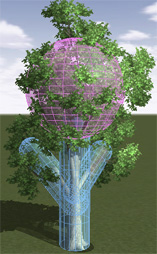
SpeedTreeActors の操作
SpeedTreeActors は他のアクタと同様に、ビューポート ウィンドウ内で動かしたり、回転したりすることができます。これらを選択すると、青にハイライトされギズモ ハンドルが現れ動かせるようになります。SpeedTrees の初期設定ユニットは、UE3 で使われるユニットよりもかなり大きいので、SpeedTree Tree Library から取り込まれた樹木は非常に小さいでしょう。UE3 内でサイズを変えることも可能ですが、複合マップのエクスポート過程で SpeedTreeCAD 内でサイズを変える方が簡単です。SpeedTreeCAD 内の 「Global」タブで、Size と Size Variance パラメータを 10 倍の大きさに変更するとちょうどよく調整できます。 注意： SpeedTreeの サイズを変更する際には、コリジョンは一定のスケーリングになるようにしてください。不定なスケーリングは樹木のコリジョンが発生しません。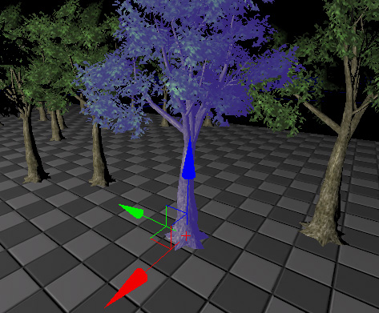
Decolayer の使用
Decolayer を使用して SpeedTrees をレベルに追加できます。これにより、Terrain 上の樹木へのペイントが可能になります。SpeedTreedecolayer を Terrain に追加するには、Terrain アクタのプロパティを開き、Terrain グループを選択します。Decolayer のセットを探し、小さな丸いアイコンをクリックして新しい Decolayer を追加します。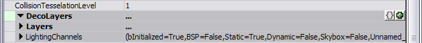
Name パラメータを設定することにより、「Decolayer」に名前を付けます。その後 Decorations セット上の丸いアイコンをクリックし、新しい 「Decoration」をこの「Decolayer」 に追加します。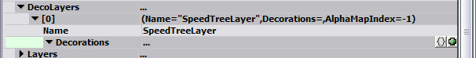
次に、追加したデコレーションを拡張し、Factory パラメータ セットを探します。下向きの矢印をクリックし、この Decoration に使用したい「Factory」を選択します。そしてリストから "SpeedTreeComponentFactory" を選択します。SpeedTrees は、Decolayer のDecoration にはかなり大きいため、Density パラメータを高く設定することを推奨します。値は 0.1 に変更するのが望ましいです。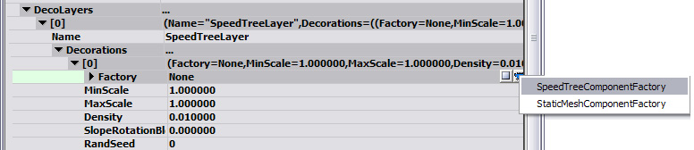
次に、ブラウザ ウィンドウ内で使用したい SpeedTree を選択します。その後、Decoration 内の「OriginalComponent」セット下にある SpeedTree パラメータに行きます。選択した SpeedTree を使用するには矢印をクリックしてください。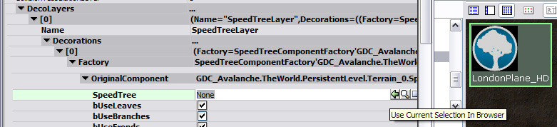
Decolayer が正しくセットアップされましたら、Terrain ツールに切り替え、作成した Decolayer を選択し Terrain 上にペイントします。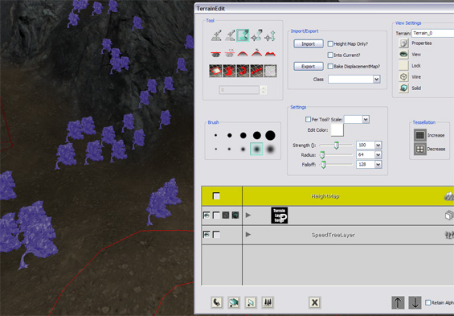
風のエフェクト
現在、SpeedTrees は X 軸に沿ってゆるやかに揺れるようになっています。カスタム リーフ メッシュのエクスポート
カスタム リーフ メッシュにより、樹木の外見のコントロールがより可能になり、カメラに向かっているリーフのビジュアルを高品質にします (多い茂っているように見える必要のある大きな樹木にとっては、カメラがその葉に向いていることは利点)。 これらの SpeedTreeリーフ メッシュのインポート方法と、樹木への配置方法は SpeedTreeCAD ヘルプ文書を参照してください。カスタム リーフ メッシュを使用しても樹木のエクスポート、または UE3 のインポート過程は変わりません。 SpeedTreeCAD はメッシュを Branch に沿って配置し、それらはローカル ピボットから回転させたり、オフセットさせたりできるようになるので、リーフ メッシュを作成する際は、Leaf のクラスタをすべて原点から発生させてください。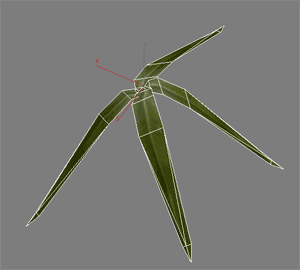